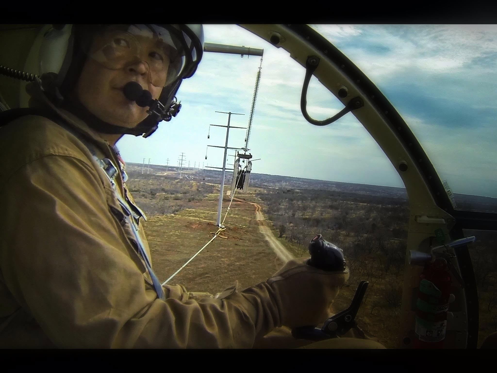
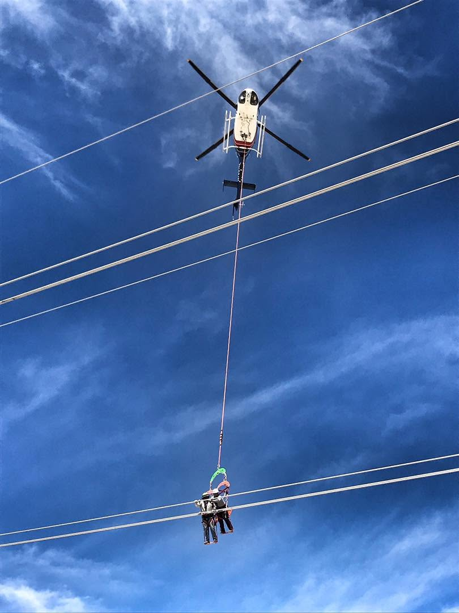

Ken Kuwahara
Utility helicopter pilot · VRLL simulation designer

Ken Kuwahara is a utility helicopter pilot based in the Los Angeles area with more than three decades of helicopter flying experience. His career has centered on the kind of work VRLL is built to rehearse: vertical-reference longline operations in utility, powerline, and construction environments.
He is currently a powerline pilot for a large utility operator, where external-load coordination, precise hover work, and sound judgment over the hook are part of everyday operations.
Longline experience

Ken's longline background spans the full arc of utility helicopter work — from construction lifts, firefighting, and general external-load flying to the specialized demands of powerline and utility operations. That experience shapes how VRLL handles load swing, hover discipline, and the sight picture pilots use when flying the hook rather than the aircraft.
- Decades of helicopter utility and external-load flying
- Construction, firefighting, and powerline longline operations
- Current powerline pilot for a large utility operator
Why VRLL
VRLL is a passion project Ken built on his own time to give something back to the helicopter community. Existing flight simulators weren't built for longline flight, and the ones that do lack realism. To become proficient, pilots need to build actual experience, and a proper flight simulator can teach certain longline skills on the ground to accelerate learning in the air — saving thousands on flight costs. Ken wanted an accessible, repeatable way for pilots — especially those coming up in utility and external-load work — to build coordination and confidence before the real hook is on the line.
The goal is simple: help nurture future longline pilots and support the community that trained and carried him through a long utility career.
Questions or feedback? Send an inquiry.